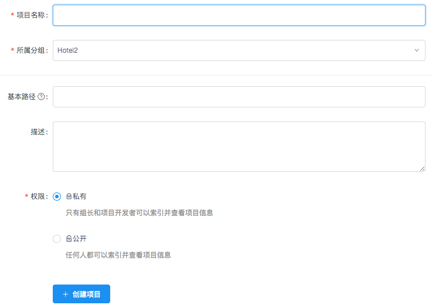
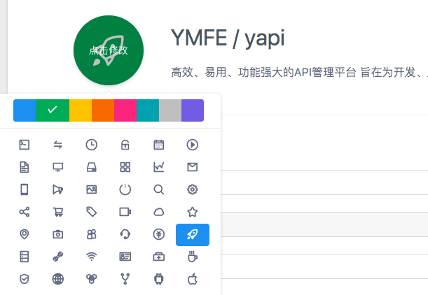

项目操作
新建项目
点击右上角的 + 新建项目，进入新建项目页面。

在新建项目页，填写项目信息：

- 项目名称不允许重复，包括其他分组
- 基本路径为接口统一添加了前缀
- 新建项目页只列出了部分配置，其他详细配置(环境配置、项目图标等)需要进入项目页的“设置”面板进行配置。
修改项目
在项目页点击上方的 设置 Tab 进入项目设置面板，这个面板涵盖了项目的所有配置。

这里比新建项目页面新增的功能如下：
修改项目图标
点击项目图标，可以修改图标及背景色：
删除项目
点击下方的删除按钮，输入项目名称进行删除。
删除项目是高风险操作，因此 YApi 对这个操作进行了特别的约束。
配置环境
环境配置 一项可以添加该项目下接口的实际环境，供 接口测试 使用，这里增加了全局header，可以在项目中设置全局header值。在接口运行页面的选择环境select中也增加环境配置弹层。
请求配置
通过自定义 js 脚本方式改变请求的参数和返回的 response 数据
请求参数示例
以 jquery ajax 为例，假设当前的请求参数是
{
url: '/api/user?id=1',
method: 'POST',
headers: {
xxx: 'xxx'
},
data: {
type: 1
}
}
那么公共变量 context 包含以下属性：
context = {
pathname: '/api/user',
query: {
id: 1
},
requestHeader: {
xxx: 'xxx'
},
method: 'POST',
requestBody: {
type:1
}
}
假设我们需要在 url 增加一个 token 参数，可以写如下自定义脚本：
context.query.token = context.utils.md5(context.pathname + 'salt');
返回数据示例
在上面的示例请求完成后，假设返回 responseBody={a:1},公共变量 context 包含以下属性：
context = {
pathname: '/api/user',
query: {
id: 1
},
requestHeader: {
xxx: 'xxx'
},
method: 'POST',
requestBody: {
type:1
},
responseData: {
a:1
},
responseHeader: {
content-type: 'application/json'
...
}
}
假设我们需要修改响应数据 responseBody a 的值为 2，可以填写如下自定义脚本：
context.responseBody.a = 2;
工具函数
context.utils = {
_ //underscore 函数,详细 API 查看官网 http://underscorejs.org/
base64 //转换字符串为 base64 编码
md5 //转换字符串为 md5 编码
sha1 //转换字符串为 sha1 编码
sha224 //转换字符串为 sha224 编码
sha256 //转换字符串为 sha256 编码
sha384 //转换字符串为 sha384 编码
sha512 //转换字符串为 sha512 编码
unbase64 //转换 base64 编码为字符串
}
token配置
每个项目都有唯一的标识token，用户可以使用这个token值来请求项目的所有资源数据。目前用到的地方是接口的自动化测试，用户不需要登录就可以访问接口测试结果信息。